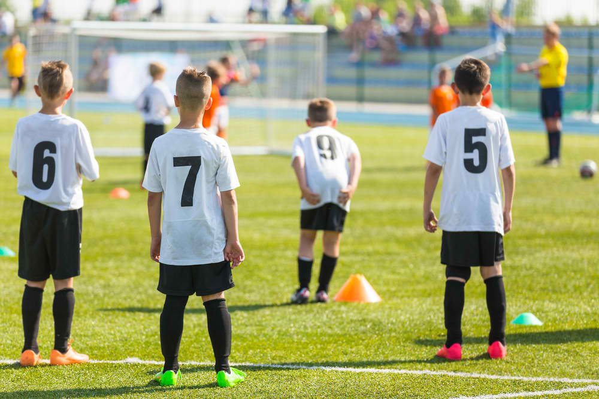
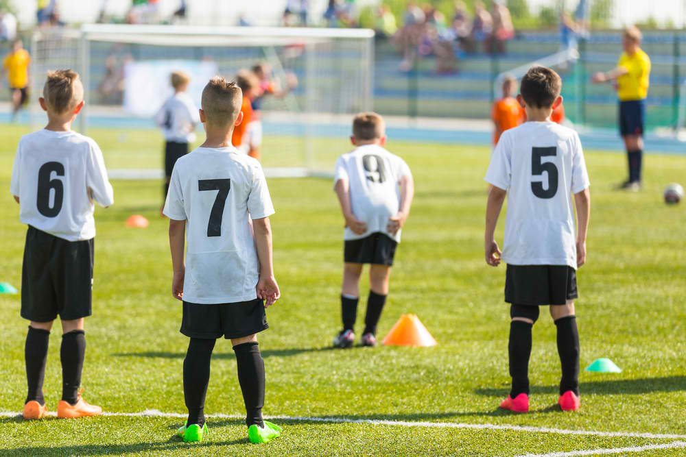

As per the official website of mumbai FootBall, www.mumbaifa.com , The selection trials for the Summer Vacation Coaching Nets of the Mumbai FootBall Association will be held on Friday, 15th April 2017 at all Centres.
The candidates are required to go to the Centre nearest to their place of residence in white clothing.
Fees - 10000 Rs for 2 Months
Location: WBU
Lenght: 5 days (Monday till Friday)
Groups: U11, U13, U15, U17 (1999 - 2008)
Description:
Training program will be managed by professional UEFA coaching team (4 coaches) with huge experience in youth football development in top European football countries. Players will be monitored during intensive training program with possibility of placement in one of our training modules in Spain, Italy or Japan.
Camp program includes football part (technical, physical, tactical) as well GPS Tracking Monitoring, discussions about Injury Prevention and Nutrition during sport activities. Lunch and drinks will be provided to all athletes as part or nutrition program and all players will receive proper Legea training apparel.
Program will starts with opening ceremony on Monday morning and will be closed with closing ceremony and camp summary on Friday afternoon. During closing ceremony will be evaluated player's performance from previous camp week and given information about Talent Identification Program.
Training Program:
One week of intensive training program starts on Monday morning, continues during the week and ends on Friday afternoon with two Technical Training Session per day (morning and afternoon), physical part and minimum one Tactical Class with video analysis per day. Part of field training program will be GPS tracking for athlete's performance monitoring, followed by detailed analyses of data. Resting time between training sessions will be filled by themed discussions about injury prevention and nutrition. Important parts of training program are Sport Psychology and Tactics. If available, our team organise internal or external friendly match to apply training elements into game.
- Daily Technical Instruction/Curriculum from Professional Staff
- Functional Training (Position Specific)
- Goalkeeper Specific Instruction
- Recovery/Activation Zones
- Performance Diaries – Self Evaluation
- Attacking/Defending Principles
- Evening Scrimmages/Tournament Play
- Game Day Management (Nutrition, Preparation, Recovery)
- Match Analysis
- Team Building
Training Schedule:
09:00 -11:00am Technical Training Program
11:30 - 02:00pm Lunch + rest time + relax activities
02:00 - 03:00pm Tactical Class
03:00 - 05:00pm Technical Training Program
Price Includes:
10x field training sessions, 5x tactical classes including video analyses and pre-training, GPS performance monitoring, Off-field activities, 5x lunch, 2x training kit, insurance, certificate, notepad with pencil, drinks